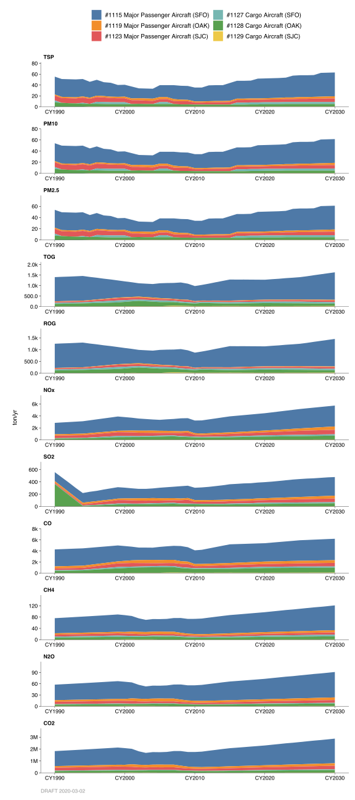

2.10 Commercial Aircraft, Jet
2.10.1 Emissions
Introduction
Considered in these categories are criteria pollutant (particulate, organic, NOx, SOx, and CO) and greenhouse gas emissions (CO2, CH4, and N2O) from commercial jet aircrafts during their operations at the three major airports in the Bay Area, namely, San Francisco International (SFO), Oakland International (OAK), and San Jose International (SJC). A classification system for commercial aircraft was formulated consisting of major passenger, cargo, and commuter/air taxi aircraft. The major passenger aircrafts are further broken down into sub-groups of short-ranged, medium-ranged, long-ranged, and seasonal/chartered aircraft. Both the major passenger and cargo aircraft categories are primarily jet aircraft.
The basic types of gas turbine engines used for commercial jet aircraft propulsion are turbojet and turbofan engines:
In a turbojet engine, large quantities of air enter the engine in the front and then compressed and squeezed by the compressor before passing into the combustion chamber. This resulting mixture of fuel and air is then burned to produce hot, expanding gases. These high velocity gases pass through a turbine that is used to drive the compressor. The remaining energy in the air stream is used for aircraft propulsion. The earlier centrifugal types of compressors used in turbojets were reliable and simple, but the amount of thrust produced was relatively low because the compression ratio is not very high. These engines were also noisy and had poor fuel economy. Therefore, the quieter and more fuel-efficient turbofan engines rapidly replaced these engines.
Turbofan aircraft engines power the majority of airline transports in service today. The air entering the forward end of the engine is compressed and then heated by burning fuel in the combustion chamber. The turbofan engine uses its fan to accelerate additional air around the outside of the engine (called the bypass flow) to produce a larger, slower-moving exhaust mass for efficient high subsonic propulsion.
Methodology
The pollutants emitted by an aircraft during take-off and landing operations are dependent on the emission rates and the duration of these operations. The emission rates are dependent upon the type of engine and its size or power rating. An aircraft operational cycle includes the landing and takeoff, or LTO cycle. For criteria pollutant emission inventory, an LTO cycle includes all normal operational modes performed by an aircraft between its descent from an altitude of about 2300 feet on landing and subsequent takeoff to reach the 2300-foot altitude. The 2300-foot limit is a reasonable approximation to the meteorological mixing depth over the Bay Area metropolitan areas. The term “operation” is used by the Federal Aviation Administration to describe either a landing or a take-off cycle. Therefore, two operations make one LTO cycle.
For criteria pollutant emission calculations, the aircraft LTO cycle is divided into five segments or operational “modes” and categorized by:
- Landing approach (descent from about 2,300 ft. to touch down),
- Taxi/idle-in,
- Taxi/idle-out,
- Take-off,
- Climb out (ascent from lift-off to about 2,300 ft.).
The emissions are based on the time of operation in each mode and the emission rates of the engines. The time in the landing approach and climbout modes are assumed to be 3.02 minutes and 1.55 minutes, respectively. Take-off time of 0.95 minute (including 0.25 minute for reverse thrust) is fairly standard for commercial aircraft and represents the time for initial climb from ground level to about 500 feet. The time in taxi/idle mode usually varies with airports.
For greenhouse gas (GHG) emission inventory, in addition to LTO cycle explained above, the aircraft landing approach and climb out modes above 2,300 feet elevation and aircraft cruise mode in the District’s air space is also included.
The information on number of aircraft operations and fleet mix was obtained from the three major commercial airports in the Bay Area, the Federal Aviation Administration (FAA), and the Metropolitan Traffic Commission (MTC). Modal emission rates for aircraft engines in commercial use were obtained from the FAA’s Aircraft Engine Emission Database, the U.S. Environmental Protection Agency (EPA), International Civil Aviation Organization (ICAO), and Intergovernmental Panel on Climate Change (IPCC).
Emission rates vary according to engine type and operating mode. Emission factors for specific aircraft were estimated by the equation:
\[ \text{EMF} = \text{N} \times \sum{\left( v_e / v_t \right)_{m,p}} \times \text{TIM} \] where:
- \(\text{EMF}\) = emission factor (lb/LTO);
- \(\text{N}\) = number of engines;
- \(\left( v_e / v_t \right)_{m,p}\) = engine emission rates (lb/hr) at mode \(m\), pollutant \(p\); and
- \(\text{TIM}\) = time in mode \(m\) (hr).
Sample calculations
TOG emissions for B747-300 (long-range aircraft):
\[ 4,878\ \text{LTO/yr} \times 24.56\ \text{lb/LTO} \div 365\ \text{day/yr} \div \text{2000 lb/ton} = 0.164\ \text{ton/day}\ \text{TOG} \]
County Distribution
The county location of each airport was used to distribute emissions into each county, where SFO is in San Mateo County; OAK is in Alameda County, and SJC in Santa Clara County.
Monthly Variation
Monthly distribution was based on the average monthly number of operations at each airport.
2.10.2 Trends
History

Emissions through the years were estimated based on the above methodology, and the actual number of operations at each airport. Selected years were calculated with corresponding estimates of the aircraft fleet mix during those times.
Growth

The continuing effort in aircraft improvement, development of newer engine technology and their phasing in will result in reduced emissions. Airport noise regulations have forced changes to the commercial aircraft fleet resulting in replacement of loud and dirtier engines with newer, quieter, and cleaner burning engines. There is a continuing trend in the use of larger aircraft thereby increasing the passenger to LTO ratio. This will reduce the number of LTOs and consequently, lower emissions.
The projections for number of operations and fleet mix at each airport were developed based on combination of information from the airports, the FAA, and the MTC’s Regional Airport System Plans (RASP). Emissions for selected years were calculated based on above methodology. Emission values for other years were obtained by interpolation and extrapolation method.
By: Sukarn Claire Date: January 2014 Base Year: 2011